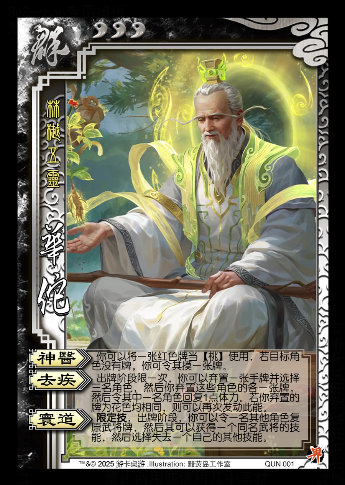

点击卡面查看大图
群
华佗
♥3林樾五灵
神医
你可以将一张红色牌当【桃】使用，若目标角色没有牌，你可令其摸一张牌。
去疾
出牌阶段限一次，你可以弃置一张手牌并选择三名角色，然后你弃置这些角色的各一张牌。然后令其中一名角色回复1点体力。若你弃置的牌为花色均相同，则可以再次发动此能。
寰道限定技
限定技，出牌阶段，你可以令一名其他角色复原武将牌，然后其可以获得一个同名武将的技能，然后选择失去一个自己的其他技能。

点击卡面查看大图
林樾五灵
你可以将一张红色牌当【桃】使用，若目标角色没有牌，你可令其摸一张牌。
出牌阶段限一次，你可以弃置一张手牌并选择三名角色，然后你弃置这些角色的各一张牌。然后令其中一名角色回复1点体力。若你弃置的牌为花色均相同，则可以再次发动此能。
限定技，出牌阶段，你可以令一名其他角色复原武将牌，然后其可以获得一个同名武将的技能，然后选择失去一个自己的其他技能。